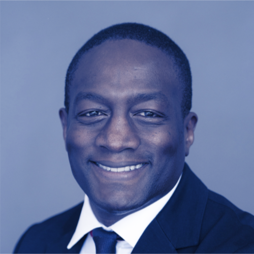

Who we are
We are a 501(c)(3) organization comprised of entrepreneurs, educators and pilots who want every student to have the opportunity to build a flight plan for life. Aviation has been transformational in our own lives. Now we are giving back and ensuring that younger generations experience the passion and profound life-changing path that aviation provides.
Those of us who are pilots know that our first solo flight is one of the most memorable experiences of our lives. For pilots, flight is captivating, inspiring a desire and a passion that takes hold of you and changes your flight plan for life.
Leadership & Team
-
Ethan Martin Founder & Board Member
Ethan Martin is ACF'S founder. He brings over 15 years of strategic consulting, aviation, private equity and board (for-profit and nonprofit) leadership experience. He is passionate about the power of aviation education to transform lives and enjoys mentoring great leaders. His consulting business, PFD Group, Inc. has a track record of helping entrepreneurs build high performing teams, grow their companies and give back to their communities.
Ethan earned his BA in economics from Carleton College and his MBA from the Tuck School of Business at Dartmouth College. He is an active primary, instrument and multi-engine flight instructor with over 1,500 hours of flight time. He has spent the last 25+ years growing the aviation community. From serving as the youngest Field Representative of EAA’s Young Eagles program in 1992 to advising Barrington Irving in his record breaking 2007 round-the- world flight, Ethan has helped introduce thousands of young people to aviation.
-
Jamie Helander
Executive Director
Jamie Helander serves as the Director of Operations for the Aviation Community Foundation. She will lead the collaborative efforts for our aviation education programs nationwide and drive our day-to-day operations. She brings 4 years of relevant aviation education and program management experience.
Jamie began her education at Guilford Technical Community College in North Carolina and graduated in May 2016 with her AAS in Aviation Management. Jamie is now a Junior studying Aeronautics at Embry-Riddle Aeronautical University through the Worldwide online program while working for the Aviation Community Foundation as the Director of Operations.
Jamie caught the “aviation bug” at a young age while flying RC planes with her dad. In high school, she pursued aviation further through Private Pilot Ground School and attending a local aviation summer camp in 2012. For the following three summers, Jamie returned to the camp as a Counselor and Lead Counselor. The EAA Chapter 1083's ASCEND summer camp and subsequent Young Eagle Rallies were where Jamie realized that her true passion lies in propelling young people to pursue careers and hobbies within aviation, aerospace, and beyond! This passion drew her to help found the Youth Aviation Programs Association (YAPA) in 2014 and join ACF in 2018. Her ultimate goals are to encourage young aviation enthusiasts, help them strengthen their personal passion and interests, and guide them to pathways for success. From the beginning, she has been particularly interested in programs that serve women, young people of low-income, and youth of color.
-
 Joshua Granof
COO, Board Member
Joshua Granof
COO, Board Member
Joshua Granof is an active primary, instrument and multi-engine flight instructor. As an affiliate faculty member at Metropolitan State University of Denver, he teaches aviation courses and as a coach for the precision flight team. Josh received a BS in engineering from the University of Colorado at Boulder.
-
Amber Brierly
Director of Communications
Amber Brierly is a passionate supporter of ACF. Born and raised in New Zealand, Amber has loved aviation since she was young. After graduating from Massey University with her Bachelor of Aviation Management, Amber interned at Embry-Riddle Aeronautical University in Daytona Beach. Amber relocated to Phoenix, AZ to begin working for Signature Flight Support in 2015. Amber brings to ACF a full skill set of Photoshop, social media expertise, and marketing outreach and is committed to growing the ACF vision,mission, and core values.
-
Trevor Waldorf
Design Fellow
Trevor is a design practitioner and technologist committed to improving K-12 and post-secondary education in the U.S.
Trevor has built design teams in music and tech, designed for MIT, Silicon Valley Bank, and others, and has a background serving in public health in rural Alaskan communities.
Board
-
Gretchen L. Jahn
Board Member
Gretchen Jahn is President and CEO of V1 Advisors, a management and business operations consulting company. V1 assists CEOs and boards of small and mid-size companies with strategy, business operations, and board process. She is often brought in as an outside board director.
Gretchen has over 30 years' entrepreneurial experience in manufacturing, software and aviation leadership, both domestic and international. She has led business startup and turnaround efforts in several companies as either an executive or a consultant, and has actively propelled companies forward as an outside board director. Clients represent a wide range of industries including foreign government entities, startups, biotechnology and pharmaceuticals, software, ecommerce, banking, manufacturing, medical device, construction, distribution, and aviation.
Gretchen was previously CEO of Mooney Airplane Company, bringing it out of bankruptcy and reestablishing the brand. She was also COO of REMOS Aircraft, a German manufacturer of light sport airplanes, and General Manager of Alpha Aviation Ltd of New Zealand, a manufacturer of fully-aerobatic two seat training airplanes. She was co-founder and CEO of Aegis Analytical Corporation, a software company providing solutions for pharmaceutical and biotech companies, where she raised $20 million in 3 rounds of venture capital financing. She has been a senior executive at several companies, leading automation efforts, and been a partner in two other software and consulting firms.
Gretchen received a BA from Lawrence University and an MA from the University of Colorado. She has her Certificate in Integrated Resource Management (CIRM) from APICS, and is a Certificated Due Diligence Professional (CDDP) with IDDA. She is Chairman of the Board of Aegis Creative Communications, Chairman of the Colorado Chapter of the Ninety-Nines, and a board member of the Light Aircraft Manufacturers Association and of Mobile Applications for Connected Health, Inc. She was recently the Chairman of the Board of DeltaHawk Engines, and a volunteer Director of the Air Race Classic for 14 years.
-
Melissa Lucas Singer
Board Member
Melissa Lucas Singer is a visionary business leader with expertise in luxury hospitality, retail and private aviation. Over the past two decades, she has worked as an innovator and turnaround expert with emphasis on developing inspiring leaders, managing service culture transformations, creating new revenue streams,and delivering operational excellence. Melissa’s innovative process and technology ideas have been a significant driver behind industry best financial results. In 2014, Microsoft named her Customer Excellence - Business Visionary of the Year. She is currently an independent consultant specializing in optimizing luxury brands across private aviation, hospitality and retail industries.
Melissa most recently served as the Senior Director of Brand Extension creating and managing a global FBO franchise program called Signature Select for Signature Flight Support, the worlds largest private jet services network. She has held senior leadership positions with Flight Options\FlexJet and the Walt Disney Company. Her passion to create equals her passion for giving. She's been on the BBA Aviation Charitable Giving Committee which has awarded over $1M to a variety of charities around the world for over four years. She has also served as Director of Fundraising for Poodle and Pooch Rescue of Orlando which employs volunteer private aviation to coordinate high volume rescues across the southeast United States. Her affinity for the Aviation Community Foundation is her desire to create an industry that inspires the most talented and diverse young hearts and minds to dream bigger!
Advisory Board
-
 Benjamin J Goodheart
Chair of Advisory Board
Benjamin J Goodheart
Chair of Advisory Board
Benjamin Goodheart, Ph.D. has worked in aviation since the mid-1990s. His diverse career began in aviation ground services and expanded to include roles in safety and organizational performance, operations, training, and professional flying. He has worked in and with a variety of aviation organizations, including flight training organizations, business and general aviation operators, manufacturers and overhaul providers, ground service, and major airlines, and his varied experience affords him a wide variety of opportunities to practice within his passion.
Benjamin is an active author and researcher focused on novel applications within aviation safety management and organizational climate and culture, and with a specific focus on building resilience and safety through leadership and user-centered design. He holds an M.S. in Safety Science and a Ph.D. from Embry-Riddle Aeronautical University with a focus in applied aviation safety. Benjamin is a Certified Safety Professional as well as an Airline Transport Pilot and Flight Instructor. Benjamin is the Founder and Principal Consultant for Magpie | Human Safety Systems, an international consultancy focused on safety and organizational performance in high-consequence industries including aviation, healthcare, and public utilities. Dr. Goodheart served as President of an aviation nonprofit organization, Mercy Wings Network through 2016.
In 2014, Dr. Goodheart was named one of Aviation Week and Space Technology magazine’s Top Forty Under 40 in aviation worldwide, and in 2017, he was elected as a Fellow of the Royal Aeronautical Society.
-
 Jennifer Urban
Advisory Board Member
Jennifer Urban
Advisory Board Member
Jennifer Urban is the Director of Compliance at CLEAR. As a member of the Transportation and Trade Group, she concentrates her practice on aviation, unmanned aircraft systems (UAS)/drones, and maritime matters.
Jennifer counsels U.S. and foreign clients on matters involving aviation regulatory compliance, the purchase and sale of corporate aircraft, international antitrust issues, and trade sanctions. To complement the advice she provides to clients relating to UAS/drones, she passed the FAA’s initial aeronautical knowledge test and earned a Remote Pilot - Small Unmanned Aircraft Systems Airman Certificate to conduct drone operations for commercial purposes.
An avid Ole Miss fan, Jennifer earned her LL.M. in Air and Space Law, J.D., M.B.A. and B.A. in Public Policy Leadership and Political Science, all from the University of Mississippi. Her wanderlust has taken her to over 40 countries and further developed her passion for experiencing and learning from other cultures.
-
Sharon L. Pinkerton
Advisory Board Member
Sharon Pinkerton was named senior vice president, legislative and regulatory policy for Airlines for America (A4A) in February 2011, and leads policy development on legislative and regulatory matters, working with Capitol Hill and the administration.
Ms. Pinkerton joined A4A as vice president, government affairs in April 2006, where she was responsible for overseeing all aviation-related issues before federal, state and local governments. Before joining A4A, she served as assistant administrator for aviation policy, planning and environment at the Federal Aviation Administration (FAA). Prior to her appointment at FAA, Pinkerton was transportation counsel to House Aviation Subcommittee Chairman John L. Mica (R-Fla.) and served on Capitol Hill for nearly 10 years. She began her professional career at Price Waterhouse.
A native of Vero Beach, Fla., Pinkerton received a Bachelor of Science degree from Cedarville College in Ohio, and earned a law degree from the University of Florida. Pinkerton is also a Certified Public Accountant.
-
Vincent G. Restivo
Advisory Board Member
Vince Restivo is Vice President - Program Management for Mente Group, LLC. He has over 34 years in business aviation experience beginning with Gulfstream Aerospace Corporation in 1984.
Vince has served as a panelist for the Arkansas Governor’s Aerospace Summit, been interviewed for various trade publications, appeared on “Wealth in the Sky” TV program focused on business aviation and has written white papers aimed at making technology understandable at the user level.
Vince and his wife Cynthia have three adult children and four grandchildren.
-
Genesis Santana
Advisory Board Member
Genesis Santana is a student at Aviation Career & Technical High School located in Long Island City, New York. She was born in the Dominican Republic and immigrated to the United States at the age of five. She is currently pursuing her Airframe and Powerplant licenses to become an aircraft maintenance technician. Currently, she is an engineering intern at JetBlue Airways where she is analyzing aircraft systems and components’ performance.
Genesis graduated salutatorian of her graduating class of 459 and was the Wing Commander of her Air Force JROTC Unit. Genesis was also named a 2018 Bank of America Student Leader, through which she interned at DREAM Charter School in Harlem, NY. Her commitment to community service has led her to receive multiple exemplary service awards.
Genesis is extremely passionate about diversity and inclusion, the aviation industry, and non-profit work. As a female in a male-dominated industry, she hopes to inspire young women to do the same. As an Aviation Community Foundation board member, she can't wait to live her passion!
-
 Lawrence Cole
Advisory Board Member
Lawrence Cole
Advisory Board Member
Lawrence Cole is a senior manager for Google Marketing Solutions. Prior to Google, he managed marketing operations for vBulletin software, a subsidiary of Internet Brands and also spent time working within the sales, engineering and operations functions of UPS. Lawrence started his career as a software engineer for Earthlink, Inc developing java and XML interfaces for corporate clients such as the NFL.
Lawrence was first introduced to aviation growing up in Lakeland, FL where he attended the Sun N' Fun air show each year as a youngster. Then in college he spent 5 summers working for NASA, where he wrote aviation-oriented software programs at Langley Research Center in Langley, VA and worked on GPS and moon rover related design, engineering and programming projects at Marshall Space Flight Center in Huntsville, AL and The Jet Propulsion Laboratory in Pasadena, CA.
Lawrence has a Distinguished Toastmaster designation from Toastmasters, International and is a member of Mensa International and Kappa Alpha Psi Fraternity, Inc. He has volunteered his time in the past as a mentor for the Tiger Woods Foundation, Black Girls Code, and School on Wheels, which provides in-home educational assistance to homeless children living in emergency shelters with their families.
-
Chris Holm
Advisory Board Member
Chris Holm is a Senior Vice President with PNC Aviation Finance and has served in this role since 2013. Chris has over 20 years of experience in commercial finance, 15 of which have been specific to the aviation industry. Prior to joining PNC, Chris spent three years with Hawker Beechcraft Corporation as the Hawker Sales Director for the Rocky Mountain Region responsible for selling all Hawker products.
Chris's career has included working for GE Capital, Aviation Finance Group and RBS Asset Finance, where he gained extensive experience in sales and structuring leases and loans. He is originally from the Midwest, but currently resides in Denver, Colorado. Chris received his bachelor’s degree in accounting from the University of Missouri - Kansas City.
Chris’s hobbies include golf, skiing, mountain biking, reading, traveling and spending time with his family.
-
 Chuck Gensler
Advisory Board Member
Chuck Gensler
Advisory Board Member
From Parker, Colorado, Chuck Gensler was named the 2017 National Certificated Flight Instructor of the Year. Chuck's lifelong interest in aviation began early at the knee of his father—a U.S. Air Force Pilot in three wars—who took him to countless air shows where he watched the Thunderbirds and Blue Angels perform.
This led Chuck to enroll in USAF ROTC while at the Citadel earning his B.S. degree in Civil Engineering. Upon graduation in 1974, he entered Air Force flight training, graduating near the top of his class. The USAF Air Training Command selected Chuck as an instructor pilot, and he quickly discovered his true passion as a teacher. He accepted a position as a career trainer in the Air Force, and spent the next 24 years in various roles educating and training military pilots.
Chuck retired from the USAF in 2000 with the rank of Lieutenant Colonel. For the next seven years, he served as Chief Flight Instructor of the Aspen Flying Club. Then in 2007, he co-founded Independence Aviation in Denver and served as its Chief Flight Instructor for the next six years. In 2016, Chuck led a team that developed a novel continuous proficiency training program at Independence called the Complete Proficiency Approach in which GA pilots receive recurrent proficiency training every 60 days throughout the year. Chuck holds ATP, CFII, and MEI certificates, and has logged 9,400 hours total time, 8,000 of them as an instructor.
-
Lori DeLorenzo
Advisory Board Member
Lori is a Senior Vice President at Cavan Solutions primarily responsible for corporate operations. She has over 30 years of experience related to the research, development, and implementation of advance concepts related to communications and automation systems. Lori’s expertise includes P&L management, executive leadership, large-scale software development program management, systems architecture, and systems engineering. Lori has over 20 years of aviation related expertise, including 14 years with the FAA focused on research, development, and implementation of advance concepts in the areas of communications, navigation and surveillance; human factors; maintenance automation; and flight test and avionics. Lori has expertise in business management; Government acquisition processes; large-scale system development, deployment, and maintenance; and all facets of systems and software engineering.
Lori is a graduate of Stevens Institute of Technology with a Master of Science degree in Systems Engineering. She also graduated from Stockton State College with a Bachelor of Science degree in Physical Oceanography. Lori is an INCOSE Certified Systems Engineer Professional (CSEP). Lori started her career with the FAA.
-

Tom Rege
Advisory Board Member
Tom Rege is the CEO and Founder of The Aviation Foundation whose mission is to increase the population of minority and women pilots by supporting programs that support aviation, providing grants and scholarships that enable participants to learn to fly and become advocates in their communities for aviation.
Tom is an Instrument rated Commercial pilot as well as a Certified Flight Instructor. Tom has over 1000 hours of flight time. He currently flies an Cirrus SR22. He is the director of flight training at OpenAir Flight school in Leesburg, VA. Prior to starting the Foundation Tom worked in the financial services and interactive media space as Program Manager and Executive.
-
 Craig Dixon
Advisory Board Member
Craig Dixon
Advisory Board Member
Craig Dixon works at Amazon Web Services and helps students and faculty to learn about cloud computing. Prior to joining AWS, Craig held several roles (from corporate business development to strategy consulting) at PayPal, Blackboard, First Annapolis Consulting. He started his career as a full-stack application developer in Merrill Lynch's Global Banking Group.
Craig holds a Bachelor of Arts degree in Computer Science from Boston University. Also, he received a Master of Business Administration from the Tuck School of Business at Dartmouth where he was a Center of Digital Strategies Fellow. Craig is an avid entrepreneur and innovator, having launched two technology companies and receiving a patent.
-
Annie Domko
Advisory Board Member
Annie Domko is an aviation professional with nearly 20 years of diverse experience in the aviation industry, ranging from the civilian sector to military operations. Originally from Boulder, Colorado, she began flying when she was 15 and followed her passion into college, attending Purdue University where she earned her Bachelor of Science in Aviation Technology. Simultaneously, she received her professional pilot degree, and served in the Naval Reserve Officer Training Corps, obtaining her private, instrument, commercial, and multi-engine ratings.
Commissioned as an Ensign in the United States Navy, she began her Naval flight training in the T-34B, and then advanced flight training in the T-45A. After earning her “Wings of Gold” in June 2008, she headed to the West Coast for training in the F/A-18C, which she flew for four years supporting Operations New Dawn and Enduring Freedom. Subsequently, she became an instructor pilot at the Fleet Replacement Squadron, training the next generation of fighter pilots in both the legacy F/A-18C-D Hornet, as well as the F/A-18E-F Super Hornet. She left Active Duty after 10+ years of service, and continues to be a member of the Navy Reserve. Upon her exit from the military, Annie began working for Airborne Tactical Advantage Company (ATAC), flying the Mk-58 Hawker Hunter as a civilian contract adversary pilot out of Kaneohe Bay on the Hawaiian island of Oahu.
Annie currently lives in Waialua, Hawaii with her husband, and is President of the local Honolulu Chapter of Women in Aviation, International. Her passion and drive in the aviation industry is to help the underserved and underprivileged gain access to all the opportunities available in the aviation field, through exposure and sharing of resources and knowledge.
-
Craig Teasdale
Advisory Board Member
Craig is the Area Director for Signature Flight Support with oversight responsibilities at Centennial (APA), Denver International (DEN), Rocky Mountain Metro (BJC), Anchorage International (ANC), Spokane International (GEG), Bozeman Yellowstone International (BZN), and Scottsdale (SDL) airports. Over the past 30 years Craig has held positions within aviation and Signature Flight Support as General Manager, Area General Manager and Area Director.
Most recently in 2014 Craig led new FBO acquisition teams for Signature FBO’s at Van Nuys (VNY) and Scottsdale (SDL). In 2016 Craig also lead an Integration team for Signature’s acquisition of Landmark Aviation. Craig was recognized as the Area Director of the Year within Signature’s World Wide network in May 2017. Craig also holds a Commercial Pilot certificate with CFI/Multi engine ratings. Craig is a graduate from Metropolitan State University, Denver, CO with a BS in Aviation Management.
Emeritus Board Members
-
 Doug Johnson
Board Member
Doug Johnson
Board Member
Douglas Johnson serves as the Chair of DEN01 for TIGER 21 in Colorado. TIGER 21 (The Investment Group for Enhanced Results in the 21st Century) provides Members with powerful perspective – their own personal board of directors made up of visionaries, executives, entrepreneurs, and investors. TIGER 21 has over 500 Members, who collectively manage more than $50 billion in personal assets. TIGER 21's mission is to help Members improve their investment acumen, tackle common issues of wealth preservation, manage family-related challenges, and understand estate planning options, philanthropic endeavors, and legacy impact.
As a former broker and investment advisor, Doug’s experience includes public markets, direct investments, deal structure and socially responsible/impact investments. In addition to TIGER 21, he’s an adviser for the Impact Finance Center at University of Denver, on the steering committee for the Colorado Impact Initiative and Colorado Impact Day and is co-founder of Actuator, an early exit M&A program of Innosphere and Covalency Partners. Doug meets regularly with investors across the spectrum of angels, super angels, family office, venture, corporate/strategic and foundations, advising on strategy, deal structure, syndication and deal flow. He also works with the CEOs of several companies, primarily startups, on funding strategies.
A graduate of Colorado State University in 1993, Doug remains very active in the community. He served as the first Director for UniverCity Connections, a unique public-private partnership between Colorado State University and City of Fort Collins as well as president of the school district foundation, board member of the economic development corporation and co-chair of the United Way campaign. Doug makes his home in Fort Collins, CO with his twin sons, Jacob and Dane.